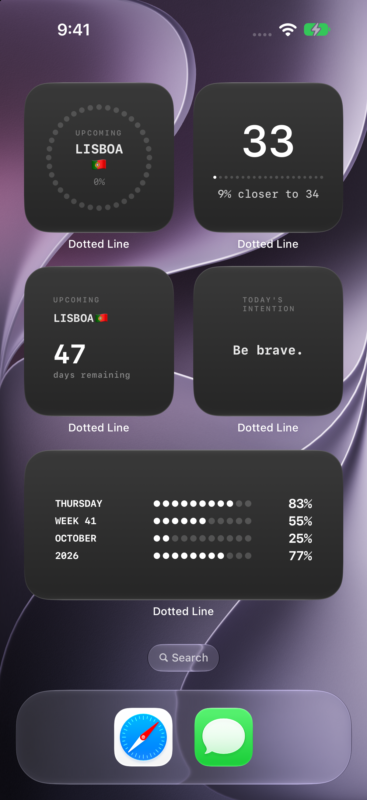
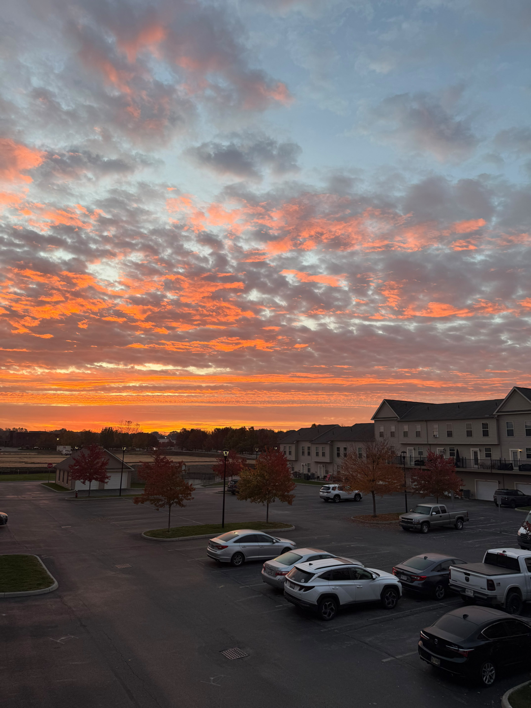

Hi there, it's been a hot minute since I last wrote. In fact, it's been 3 years since my last post. A lot has changed in those 3 years: I got married, and we welcomed a beautiful baby boy about 18 months ago.
Another big change happened recently: I'm no longer working for a company but rather for myself. I've been wanting to do this for a long time, and the opportunity finally came. It's only been a few weeks, and I'm still trying to learn the ropes and figure out how I want to manage my time. But what I can tell you is that this has been the most fun I've had "working" in the last 8 years. I've been building things on the side since forever, but being able to wake up and plan my day around things I want to do is amazing. I do understand that's an enormous privilege, of course, and I'm insanely grateful for it.
So what have I been building? I'm glad you asked :)
Dotted Line
After my son was born, I was quickly hit with the realization that time is flying by at the speed of light. Of course, I knew this before, but once I started noticing changes in him daily, that realization became very vivid. I really did not want to forget that realization, so I taught myself Swift (thank you, 100 Days of SwiftUI) and wrote Dotted Line.
Its main goal is to remind the user that time is finite, life goes by very fast, and we need to seize the moment and live in the present.
If you are interested, you can download the app and/or follow the app on Instagram.
Here's how the app looks:



I'm also working on and testing out a few other ideas at the moment and will write about them once I have more to share! If you are a solo founder, indie app dev, or just want to chat about interesting ideas and tech, feel free to email me.
I will leave you with this picture:

This was the sunrise on my first day of self-employment. It's actually the first sunrise I've been able to watch in peace and without the hustle and bustle of daily life in forever (probably since my early 20s). Be present, my friends, and enjoy life!
Thank you for reading this far,
Nikola